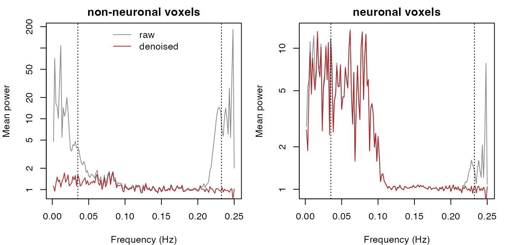

The problem
Cardiac pulsation and respiration add structured variance to BOLD time series. The signals are strongest in and near large vessels and cerebrospinal fluid, but they reach grey matter too. At conventional repetition times they are also aliased: a heart rate near 1 Hz sampled every 2 s turns up as a slow oscillation that a temporal filter can’t separate from neural signal. Methods that model the noise from external recordings, such as RETROICOR, need a pulse oximeter and a respiratory belt, and those recordings are often missing or unusable.
fast_phy_denoise() estimates the noise from the fMRI
data alone and needs no task design. It follows the logic of PHYCAA+
(Churchill & Strother, 2013):
- Give each voxel a neuronal-tissue weight
wNN(1 = neuronal, 0 = non-neuronal) from the energy of its temporal differences. - Weight the data toward non-neuronal voxels, reduce them to a small number of temporal components, and extract candidate components by lag-1 canonical autocorrelation analysis, which orders them by how well they predict their own next time point.
- Keep a candidate as noise when its median voxelwise R² in non-neuronal voxels is more than twice that in neuronal voxels.
- Project the kept components out of every voxel in one step, restoring voxel means.
Use it for resting-state or task data that have no usable physiological recordings, before connectivity or GLM analysis. Don’t use it on data that have already been physiologically corrected (see Limitations).
Simulated data with a known answer
To check a denoiser you need to know which variance is physiological.
simulate_phy_data() returns a voxels × time matrix together
with its sources: two physiological sources (cardiac and respiratory,
defined in Hz and sampled at the TR, so they alias as real signals do),
three slow neural sources, the voxel loadings, and the true tissue label
of each voxel. Voxel means sit near 100, so temporal SNR is on a
realistic scale.
sim <- simulate_phy_data(n_vox = 1500, n_time = 300, tr = 2, seed = 1)
sim
#> <fmriphysio_sim> 1500 voxels x 300 time points (TR = 2 s)
#> non-neuronal voxels: 300 (20%)
#> physiological sources: cardiac 0.96 Hz, respiratory 0.27 Hz
#> neural sources: 3At this TR the Nyquist frequency is 0.25 Hz. The frequencies the base physiological rates alias to are:
alias_hz <- abs(sim$physio_hz - round(sim$physio_hz * sim$tr) / sim$tr)
round(alias_hz, 3)
#> cardiac respiratory
#> 0.035 0.232The cardiac source lands near 0.035 Hz, below the 0.08 Hz cutoff of the simulated neural sources. The simulated rates drift slowly, so the aliased power spreads around these frequencies, but either way a band-pass filter can’t remove the cardiac noise without removing neural signal too.
Denoise
fast_phy_denoise() needs only the data. The
tr argument is stored as metadata; the algorithm doesn’t
use it.
fit <- fast_phy_denoise(sim$x, tr = sim$tr)
fit
#> <fast_phy_denoise_result>
#> data: 1500 x 300 (1500 of 1500 voxels analysed, 300 time points)
#> wNN: 187 non-neuronal (< 0.5), 1313 neuronal (> 0.5) voxels
#> extractor: caa, rank 20
#> removed: 2 of 20 candidate componentsfit$x_clean has the same shape as sim$x.
fit$regressors holds the time courses that were projected
out, and fit$component_table explains why each candidate
was kept or not:
ct <- fit$component_table
ct$ratio_nn_nt <- round(ct$ratio_nn_nt, 2)
ct$predictability <- round(ct$predictability, 3)
head(ct[, c("candidate", "ratio_nn_nt", "predictability", "selected")], 8)
#> candidate ratio_nn_nt predictability selected
#> 1 1 15.82 0.990 TRUE
#> 2 2 10.17 0.983 TRUE
#> 3 3 0.04 0.762 FALSE
#> 4 4 0.05 0.732 FALSE
#> 5 5 0.05 0.693 FALSE
#> 6 6 0.24 0.445 FALSE
#> 7 7 0.81 0.363 FALSE
#> 8 8 0.91 0.329 FALSECandidates are ordered by predictability, the canonical lag-1
correlation. The two selected candidates are expressed more than ten
times as strongly in non-neuronal as in neuronal voxels
(ratio_nn_nt). Candidates 3 to 5 are also highly
predictable, but their ratios are far below 1. They are expressed mainly
in neuronal tissue, so they’re kept. Predictability alone doesn’t
separate noise from signal. The spatial ratio does.
Here the ground truth confirms it. Each removed regressor matches one physiological source:
Is the tissue map right?
The whole method rests on wNN, so compare it with the
true tissue labels:
tissue <- factor(ifelse(sim$nn, "non-neuronal", "neuronal"))
table(tissue, wNN = ifelse(fit$wNN < 0.5, "< 0.5", "> 0.5"))
#> wNN
#> tissue < 0.5 > 0.5
#> neuronal 0 1200
#> non-neuronal 187 113
round(tapply(fit$wNN, tissue, mean), 3)
#> neuronal non-neuronal
#> 0.999 0.384The default map is conservative. No neuronal voxel is labelled
non-neuronal, but 113 of the 300 non-neuronal voxels get
wNN > 0.5. The weight ramps from 1 at the 74th
percentile of excess difference energy (delta_nt = 0.74) to
0 at the 95th (delta_nn = 0.95), so only the upper tail is
treated as non-neuronal. Because selection compares medians, a partly
labelled non-neuronal set is enough here.
How much noise went, and how much signal stayed?
With the sources known, we can measure, in each truly neuronal voxel, the fraction of the energy in the span of the physiological sources (or of the neural sources) that survives denoising: 0 means all removed, 1 means all kept. This helper is only for evaluation; it isn’t part of the package.
energy_kept <- function(x_raw, x_clean, sources) {
Q <- qr.Q(qr(scale(sources, scale = FALSE)))
before <- rowSums(((x_raw - rowMeans(x_raw)) %*% Q)^2)
after <- rowSums(((x_clean - rowMeans(x_clean)) %*% Q)^2)
after / before
}
kept <- function(sim, x_clean) {
nt <- !sim$nn
c(physio = median(energy_kept(sim$x[nt, ], x_clean[nt, ], sim$physio)),
neural = median(energy_kept(sim$x[nt, ], x_clean[nt, ], sim$neural)))
}CompCor (Behzadi et al., 2007) is the usual data-driven alternative:
it removes the leading principal components of a set of nuisance voxels.
compcor_denoise() implements it as a baseline.
"acompcor" takes its nuisance voxels from
nuisance_mask or, as here, from the voxels with
wNN < 0.5. "tcompcor" takes the
highest-variance voxels. Both remove a fixed number of components,
n_comp (default 5).
cc_a5 <- compcor_denoise(sim$x, tr = sim$tr, mode = "acompcor")
cc_a2 <- compcor_denoise(sim$x, tr = sim$tr, mode = "acompcor", n_comp = 2)
cc_t5 <- compcor_denoise(sim$x, tr = sim$tr, mode = "tcompcor")
round(rbind(
fast_phy_denoise = kept(sim, fit$x_clean),
"aCompCor, n_comp 5" = kept(sim, cc_a5$x_clean),
"aCompCor, n_comp 2" = kept(sim, cc_a2$x_clean),
"tCompCor, n_comp 5" = kept(sim, cc_t5$x_clean)
), 3)
#> physio neural
#> fast_phy_denoise 0.001 0.994
#> aCompCor, n_comp 5 0.001 0.022
#> aCompCor, n_comp 2 0.001 0.994
#> tCompCor, n_comp 5 0.002 0.311fast_phy_denoise() removes almost all of the
physiological energy from neuronal voxels and keeps almost all of the
neural energy. All three CompCor variants remove the physiological
energy too, but with five components aCompCor also removes nearly all of
the neural energy, and tCompCor removes most of it. In this simulation
the non-neuronal voxels carry weak neural signal. The comparison of
n_comp = 2 with n_comp = 5 shows that the
three components beyond the second carry it, and fixed-rank CompCor
removes them from every voxel. With n_comp = 2, the true
number of physiological sources, aCompCor does as well as
fast_phy_denoise(). So CompCor isn’t inherently worse here,
but it depends on a rank chosen in advance, whereas
fast_phy_denoise() selects components by where they are
expressed.
The spectra show where the removed variance was:
mean_spectrum <- function(x, tr) {
z <- t(x - rowMeans(x))
k <- seq_len(floor(nrow(z) / 2))
p <- rowMeans(Mod(mvfft(z))^2) / nrow(z)
list(hz = k / (nrow(z) * tr), power = p[k + 1])
}
op <- par(mfrow = c(1, 2), mar = c(4, 4, 2, 1), cex = 0.8)
for (lab in c("non-neuronal", "neuronal")) {
v <- tissue == lab
before <- mean_spectrum(sim$x[v, ], sim$tr)
after <- mean_spectrum(fit$x_clean[v, ], sim$tr)
plot(before$hz, before$power, type = "l", log = "y", col = "grey55",
xlab = "Frequency (Hz)", ylab = "Mean power", main = paste(lab, "voxels"))
lines(after$hz, after$power, col = "firebrick")
abline(v = alias_hz, lty = 3)
if (lab == "non-neuronal") {
legend("top", c("raw", "denoised"), col = c("grey55", "firebrick"),
lty = 1, bty = "n")
}
}
par(op)Dotted lines mark the frequencies the base cardiac and respiratory rates alias to. In non-neuronal voxels the physiological power around both lines is gone. In neuronal voxels the respiratory peak is removed. Below about 0.1 Hz their spectrum is dominated by neural signal and looks unchanged: the cardiac noise aliased into that band is too weak there to see, although the table above shows that the physiological energy is removed.
Across datasets and TRs
One dataset is an anecdote. The next chunk repeats the comparison over six simulated datasets at each of two TRs. It also runs the settings closer to the PHYCAA+ specification (weighting toward neuronal tissue, a rank-100 subspace, and a ratio threshold of 1), which the package defaults depart from.
phycaa_like <- list(extraction_weight = "neuronal", pca_rank = 100,
ratio_thresh = 1)
runs <- do.call(rbind, lapply(c(0.8, 2), function(tr) {
do.call(rbind, lapply(1:6, function(seed) {
s <- simulate_phy_data(n_vox = 1500, n_time = 300, tr = tr, seed = seed)
rbind(
data.frame(tr = tr, seed = seed, settings = "defaults",
t(kept(s, fast_phy_denoise(s$x)$x_clean))),
data.frame(tr = tr, seed = seed, settings = "PHYCAA+-like",
t(kept(s, do.call(fast_phy_denoise,
c(list(s$x), phycaa_like))$x_clean)))
)
}))
}))
summary_tab <- do.call(rbind, lapply(split(runs, runs[c("settings", "tr")]),
function(d) data.frame(
settings = d$settings[1], tr = d$tr[1],
physio_mean = mean(d$physio), physio_worst = max(d$physio),
neural_mean = mean(d$neural), neural_worst = min(d$neural)
)))
rownames(summary_tab) <- NULL
format(summary_tab, digits = 2)
#> settings tr physio_mean physio_worst neural_mean neural_worst
#> 1 defaults 0.8 0.020 0.063 0.97 0.93
#> 2 PHYCAA+-like 0.8 0.463 0.667 0.94 0.89
#> 3 defaults 2.0 0.077 0.345 0.96 0.90
#> 4 PHYCAA+-like 2.0 0.202 0.611 0.81 0.57With the defaults, on average about 2% (TR 0.8 s) and 8% (TR 2 s) of the physiological energy remains in neuronal voxels, and at least 90% of the neural energy is kept in every run. The PHYCAA+-like settings leave more physiological energy and remove more neural energy. The average hides a weaker run at TR 2 s:
runs[runs$settings == "defaults" & runs$tr == 2, c("seed", "physio", "neural")]
#> seed physio neural
#> 13 1 0.000658685 0.9943354
#> 15 2 0.345267101 0.9034659
#> 17 3 0.051667277 0.9740434
#> 19 4 0.009761529 0.9986915
#> 21 5 0.006763497 0.9765933
#> 23 6 0.044996799 0.9373286Break the worst run (seed 2) down by source:
s2 <- simulate_phy_data(n_vox = 1500, n_time = 300, tr = 2, seed = 2)
fit2 <- fast_phy_denoise(s2$x)
nt2 <- !s2$nn
by_source <- rbind(
alias_hz = abs(s2$physio_hz - round(s2$physio_hz * s2$tr) / s2$tr),
energy_kept = sapply(colnames(s2$physio), function(j) {
median(energy_kept(s2$x[nt2, ], fit2$x_clean[nt2, ],
s2$physio[, j, drop = FALSE]))
}),
best_abs_r = apply(abs(cor(fit2$regressors, s2$physio)), 2, max)
)
round(by_source, 2)
#> cardiac respiratory
#> alias_hz 0.21 0.18
#> energy_kept 0.43 0.11
#> best_abs_r 0.86 0.94Here 8 components are removed, but 43% of the cardiac energy remains
in neuronal voxels, and no removed regressor matches the cardiac source
closely (best |r| = 0.86). In this run the two sources alias to nearby
frequencies (0.21 and 0.18 Hz), and the candidates that pass selection
capture the cardiac source only in part. Inspect
component_table and regressors whenever the
result matters.
Design-free quality control
On real data there’s no ground truth.
compute_design_free_qc() summarises what denoising changed,
separately for voxels with wNN > 0.5 (neuronal) and
wNN < 0.5 (non-neuronal). Temporal SNR after denoising
is computed with the raw voxel mean, so it measures the change in noise
at a fixed signal level. The second column recomputes the same metrics
with the true tissue labels, which you can do only in simulation.
qc <- compute_design_free_qc(sim$x, fit$x_clean, wNN = fit$wNN,
component_table = fit$component_table)
qc_true <- compute_design_free_qc(sim$x, fit$x_clean,
wNN = ifelse(sim$nn, 0, 1))
metrics <- c("tsnr_nt_before", "tsnr_nt_after", "tsnr_nn_before",
"tsnr_nn_after", "nt_variance_reduction_frac",
"nn_variance_reduction_frac")
round(cbind(wNN_labels = unlist(qc[metrics]),
true_labels = unlist(qc_true[metrics])), 3)
#> wNN_labels true_labels
#> tsnr_nt_before 55.461 56.084
#> tsnr_nt_after 58.897 58.011
#> tsnr_nn_before 38.983 41.094
#> tsnr_nn_after 94.264 94.619
#> nt_variance_reduction_frac 0.112 0.069
#> nn_variance_reduction_frac 0.837 0.817Median tSNR in non-neuronal voxels more than doubles, and variance in neuronal voxels falls modestly. The columns disagree for neuronal voxels because the wNN-labelled neuronal set also contains the 113 non-neuronal voxels that the map missed, and denoising removes much of their variance. Their median variance falls by:
missed <- sim$nn & fit$wNN > 0.5
v_raw <- apply(sim$x[missed, ], 1, var)
v_clean <- apply(fit$x_clean[missed, ], 1, var)
round(1 - median(v_clean) / median(v_raw), 3)
#> [1] 0.763These metrics describe what was removed. They can’t show that only noise was removed, because tSNR rises whenever variance is removed, whether it was noise or neural signal.
write_qc_artifact() saves the summary as
.rds, .csv or .json for
reports:
path <- tempfile(fileext = ".csv")
write_qc_artifact(qc, path)
head(read.csv(path), 4)
#> metric value
#> 1 n_vox 1500
#> 2 n_time 300
#> 3 n_nt 1313
#> 4 n_nn 187Protecting a task design
For task data you can pass the design matrix. Candidate regressors
are then made orthogonal to the design (plus an intercept) before
scoring and removal, so least-squares task estimates from
x_clean equal those from the raw data. To see what that
buys and what it costs, add a block-design response (β = 0.5) to the
neuronal voxels only. The design correlates weakly with the aliased
cardiac source:
t_sec <- (seq_len(ncol(sim$x)) - 1) * sim$tr
boxcar <- as.numeric(t_sec %% 60 < 30)
hrf <- dgamma(0:15 * sim$tr, shape = 6) - dgamma(0:15 * sim$tr, shape = 16) / 6
task <- as.numeric(stats::filter(boxcar, hrf, sides = 1, circular = TRUE))
task <- task / sd(task)
x_task <- sim$x + outer(ifelse(sim$nn, 0, 0.5), task)
round(cor(task, sim$physio), 3)
#> cardiac respiratory
#> [1,] -0.138 0Fit with and without the design, and estimate the task effect in every voxel by least squares:
fit_free <- fast_phy_denoise(x_task, tr = sim$tr)
fit_guard <- fast_phy_denoise(x_task, tr = sim$tr, design = task)
X_design <- cbind(1, task)
beta <- function(x) (x %*% X_design %*% solve(crossprod(X_design)))[, 2]
b <- cbind(raw = beta(x_task), no_design = beta(fit_free$x_clean),
design = beta(fit_guard$x_clean))
# Largest change in any voxel's estimate, relative to the raw data
max_change <- apply(abs(b[, -1] - b[, "raw"]), 2, max)
signif(max_change, 3)
#> no_design design
#> 3.02e-01 3.41e-13
beta_tab <- rbind(
"mean beta, neuronal voxels (true 0.5)" = colMeans(b[!sim$nn, ]),
"RMS beta, non-neuronal voxels (true 0)" = sqrt(colMeans(b[sim$nn, ]^2))
)
round(beta_tab, 3)
#> raw no_design design
#> mean beta, neuronal voxels (true 0.5) 0.501 0.493 0.501
#> RMS beta, non-neuronal voxels (true 0) 0.227 0.082 0.227With the design, no estimate changes by more than 3.4^{-13}, which is numerical precision. Without it, estimates change by up to 0.30. In non-neuronal voxels, where the true effect is 0, removing the cardiac noise that correlates with the task shrinks the spurious task effect (RMS 0.227 to 0.082). The guardrail keeps it at 0.227. The mean estimate in neuronal voxels shifts slightly without the design (0.501 to 0.493). So the guardrail protects task estimates from denoising, but it also leaves task-correlated physiological noise in place. Use it when an unchanged GLM is the requirement, and omit it when removing task-correlated noise matters more.
Key parameters
These are the arguments you’re most likely to change:
-
pca_rank(default 20) caps the rank of the subspace from which components are extracted; the rank used ismin(pca_rank, floor(T / 3)). Larger ranks give the lag-1 analysis room to fit spurious components. -
ratio_thresh(default 2): a candidate is selected when its non-neuronal/neuronal R² ratio exceeds this value. Raise it to remove fewer components. -
pred_thresh(defaultNULL, off) requires a minimum lag-1 canonical correlation. Aliased physiological noise isn’t always highly predictable, so use it with care (see below). -
stability = "half"keeps a candidate only if its spatial R² map is reproduced when components are re-extracted in each half of the run (stability_thresh, default 0.3). -
extraction_weightis"non_neuronal"by default (weight1 - wNN)."neuronal"gives the PHYCAA+ weighting, and"none"gives unweighted data. Scoring always uses unweighted data. -
max_passesrepeats extraction on the cleaned data and removes the union of the selected components. One pass is the default. -
delta_nt,delta_nnandwnn_thresholdcontrol the tissue map, andwnnaccepts a map you computed yourself (for example from a segmentation).
The TR 2 s dataset above is an easy case: two components are removed, one per source. The same seed at TR 0.8 s is harder, and there the settings matter:
sim08 <- simulate_phy_data(n_vox = 1500, n_time = 300, tr = 0.8, seed = 1)
settings <- list(
"defaults" = list(),
"ratio_thresh = 5" = list(ratio_thresh = 5),
"pred_thresh = 0.5" = list(pred_thresh = 0.5),
"stability = 'half'" = list(stability = "half"),
"pca_rank = 10" = list(pca_rank = 10),
"pca_rank = 50" = list(pca_rank = 50),
"max_passes = 2" = list(max_passes = 2),
"PHYCAA+-like" = phycaa_like
)
tuning <- t(vapply(settings, function(args) {
f <- do.call(fast_phy_denoise, c(list(sim08$x), args))
c(removed = ncol(f$regressors), kept(sim08, f$x_clean))
}, numeric(3)))
round(tuning, 3)
#> removed physio neural
#> defaults 17 0.005 0.980
#> ratio_thresh = 5 15 0.006 0.984
#> pred_thresh = 0.5 0 1.000 1.000
#> stability = 'half' 16 0.005 0.983
#> pca_rank = 10 7 0.003 0.995
#> pca_rank = 50 27 0.069 0.948
#> max_passes = 2 34 0.005 0.951
#> PHYCAA+-like 23 0.538 0.952The default removes 17 components although there are only two physiological sources. A closer look at the default fit:
fit08 <- fast_phy_denoise(sim08$x)
selected08 <- fit08$component_table$selected
# Frequencies the base rates alias to at TR 0.8 s
alias08 <- abs(sim08$physio_hz - round(sim08$physio_hz * sim08$tr) / sim08$tr)
round(alias08, 3)
#> cardiac respiratory
#> 0.285 0.268
# Best match between any removed regressor and each true source
round(apply(abs(cor(fit08$regressors, sim08$physio)), 2, max), 2)
#> cardiac respiratory
#> 0.82 0.73
# Lag-1 correlation of the selected candidates
round(range(fit08$component_table$predictability[selected08]), 3)
#> [1] 0.002 0.494At this TR the two sources alias to within 0.018 Hz of each other. No single removed regressor matches either source closely, yet together the removed components take out almost all of the physiological energy (first row of the table). Some selected candidates have almost no lag-1 predictability; they pass on the spatial ratio alone. Each removed component also takes one temporal degree of freedom from every voxel, and the three fits that remove the most components keep the least neural energy.
-
pca_rank = 10removes fewer components and loses no physiological removal. -
pca_rank = 50and the PHYCAA+-like settings leave more physiological energy behind. -
pred_thresh = 0.5removes nothing, because every candidate that passes the ratio test has a lag-1 correlation below 0.5. - A second pass doubles the number of removed components and removes more neural signal.
Masks and input formats. mask restricts
the analysis to a set of voxels (a logical vector, voxel indices, a 3D
array, or a mask volume). Voxels outside it are returned unchanged:
in_brain <- seq_len(nrow(sim$x)) <= 1200
fit_masked <- fast_phy_denoise(sim$x, mask = in_brain)
identical(fit_masked$x_clean[!in_brain, ], sim$x[!in_brain, ])
#> [1] TRUEVoxels that are constant or contain non-finite values are also
excluded and returned unchanged. Input can be a voxels × time matrix, a
time × voxels matrix (set orientation, or let
"auto" treat a matrix with fewer rows than columns as time
× voxels), a 4D array with time last, or a neuroim2 image.
Matrices and arrays come back with their original dimensions. A
neuroim2::NeuroVec comes back as the same kind of image in
the same NeuroSpace – a DenseNeuroVec, or a
SparseNeuroVec with its mask, in which case only the voxels
inside that mask are analysed – and a
neuroim2::LogicalNeuroVol can be used as
mask:
sp <- neuroim2::NeuroSpace(c(10, 10, 15, ncol(sim$x)), spacing = c(3, 3, 3))
img <- neuroim2::DenseNeuroVec(array(sim$x, dim(sp)), sp)
fit_img <- fast_phy_denoise(img, tr = sim$tr)
class(fit_img$x_clean)
#> [1] "DenseNeuroVec"
#> attr(,"package")
#> [1] "neuroim2"
identical(neuroim2::space(fit_img$x_clean), sp)
#> [1] TRUELimitations
No physiological noise, no reliable selection. The tissue map flags the voxels with the most excess difference energy. The next chunk runs the same simulation with the physiological sources switched off, so every truly non-neuronal voxel is left without physiological noise:
sim0 <- simulate_phy_data(n_vox = 1500, n_time = 300, tr = 2, seed = 1,
physio_amp_nn = 0, physio_amp_nt = 0)
fit0 <- fast_phy_denoise(sim0$x)
flagged <- fit0$wNN < 0.5
data.frame(
removed = ncol(fit0$regressors),
flagged = sum(flagged),
flagged_truly_non_neuronal = sum(flagged & sim0$nn),
neural_kept = round(median(energy_kept(sim0$x[!sim0$nn, ],
fit0$x_clean[!sim0$nn, ],
sim0$neural)), 3)
)
#> removed flagged flagged_truly_non_neuronal neural_kept
#> 1 15 102 1 0.308The map still flags 102 voxels as non-neuronal, but only 1 of them is
truly non-neuronal. Components expressed in the flagged neuronal voxels
then pass the ratio test: 15 are removed, and only 31% of the neural
energy survives. So don’t apply the method to data that have already
been physiologically corrected, and inspect component_table
and the removed regressors (their spectra, their spatial
maps) before trusting a result.
Other limitations:
-
The defaults depart from PHYCAA+. PHYCAA+ weights
toward neuronal tissue and searches over subspace ranks. The defaults
here (weighting toward non-neuronal tissue, rank 20, ratio 2) were
chosen because they did better on
simulate_phy_data(), as the replication above shows. That evidence comes from simulation, not from validation on acquired data. - A physiological source can be only partly removed. In the worst of the six TR 2 s runs above, 43% of the cardiac energy remained in neuronal voxels.
- The design guardrail leaves task-correlated noise in place.
-
CompCor is a baseline.
compcor_denoise()follows Behzadi et al.- but does not reproduce fMRIPrep’s confounds (mask erosion, censoring, variance-explained retention). Use fMRIPrep’s confounds when you need parity.
Further reading
-
?fast_phy_denoise: all arguments and the returned object. -
?compute_wNN_diff_energyand?extract_caa_oneshot: the tissue map and the component extractor as standalone functions. The"dicca"and"dipca"extractors (Dong & Qin, 2018) require the ‘dipca’ package from https://bbuchsbaum.r-universe.dev. -
?benchmark_fast_phy_denoise: timing and ground-truth scoring over data sizes and SVD engines.
References
Behzadi, Y., Restom, K., Liau, J., & Liu, T. T. (2007). A component based noise correction method (CompCor) for BOLD and perfusion based fMRI. NeuroImage, 37(1), 90–101. https://doi.org/10.1016/j.neuroimage.2007.04.042
Churchill, N. W., & Strother, S. C. (2013). PHYCAA+: An optimized, adaptive procedure for measuring and controlling physiological noise in BOLD fMRI. NeuroImage, 82, 306–325. https://doi.org/10.1016/j.neuroimage.2013.05.102
Churchill, N. W., Yourganov, G., Spring, R., Rasmussen, P. M., Lee, W., Ween, J. E., & Strother, S. C. (2012). PHYCAA: Data-driven measurement and removal of physiological noise in BOLD fMRI. NeuroImage, 59(2), 1299–1314. https://doi.org/10.1016/j.neuroimage.2011.08.021
Dong, Y., & Qin, S. J. (2018). A novel dynamic PCA algorithm for dynamic data modeling and process monitoring. Journal of Process Control, 67, 1–11. https://doi.org/10.1016/j.jprocont.2017.05.002